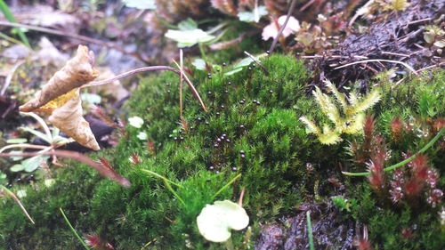

Catoscopiaceae
Black Golf Club Moss Family
Catoscopiaceae is a monotypic family of acrocarpous mosses, containing only the single genus and species, Catoscopium nigritum. This distinctive moss is recognized by its dense, dark tufts growing in calcareous (base-rich) wet habitats, and especially by its unique sporophyte: a tiny, almost perfectly spherical, blackish capsule held stiffly erect on a long, dark, wiry seta, resembling a miniature golf club head.
Overview
The Catoscopiaceae family, represented solely by Catoscopium nigritum, is found in circumboreal, arctic, and alpine regions of the Northern Hemisphere, with some occurrences in mountainous areas further south. It is ecologically specialized, typically restricted to moist or wet, open, calcareous habitats such as rich fens, wet meadows, calcareous flushes, dune slacks, and moist soil over limestone or other base-rich rocks.
The plants form dense, low tufts or cushions, usually dark green above and brownish to blackish below due to decaying older parts and dense rhizoids. While the gametophyte is relatively inconspicuous, the sporophyte is highly distinctive and makes the moss easily recognizable when fertile. The long, dark, wiry seta holds aloft a minuscule (<1 mm), perfectly round, blackish capsule that stands erect, unlike the inclined or pendulous capsules of many related moss families.
Due to its specific habitat requirements, Catoscopium nigritum can be an indicator of calcareous wetland conditions. Its phylogenetic position is somewhat debated, often placed near the Bartramiales or Meesiaceae, but its unique combination of features sets it apart.
Quick Facts
- Scientific Name: Catoscopiaceae
- Common Name: Black Golf Club Moss Family
- Number of Genera: 1 (Catoscopium)
- Number of Species: 1 (Catoscopium nigritum)
- Distribution: Circumboreal, arctic-alpine, in calcareous wetlands.
- Habitat: Moist to wet, calcareous fens, meadows, flushes, dune slacks.
- Evolutionary Group: Bryophytes - Mosses (Class: Bryopsida, Order: Uncertain - near Bartramiales?)
Key Characteristics
Growth Form and Habit
Catoscopium is an acrocarpous moss, forming dense, low tufts or cushions (typically 1-4 cm high). Stems often appear somewhat julaceous (smoothly cylindrical) due to appressed leaves when dry. Plants are dark green above, becoming brownish or blackish below.
Stems
Stems are erect, sparsely branched, and usually densely covered with reddish-brown rhizoids below.
Leaves
Leaves are small (around 1 mm long), crowded, erect-spreading when moist, often somewhat imbricate (overlapping) and appressed when dry. They are typically ovate-lanceolate, concave, with an apex that is obtuse or bluntly acute. The costa (midrib) is single and strong, ending just below the apex. Leaf margins are entire and often narrowly recurved or revolute (rolled under). Leaf cells are small, quadrate to short-rectangular, thick-walled, and smooth or slightly bulging (mammillose), but not distinctly papillose. There is no specialized leaf border or alar cells.
Asexual Reproduction
Specialized asexual propagules are not known.
Sporophytes (Reproductive Structures)
Sporophytes are terminal on the main stems. The seta is long (1-2 cm), slender, wiry, smooth, and typically dark reddish-brown to almost black. The capsule is highly distinctive: it is very small (usually 0.5-0.8 mm), almost perfectly globose (spherical), erect, symmetric, smooth-walled, and ripens to a dark brown or blackish color. The peristome is typically single (or sometimes described as a rudimentary double peristome), composed of 16 short, irregular, often fragile teeth that may be difficult to observe. The operculum (lid) is small and conic.
Habitat
Strictly confined to moist or wet, open, calcareous (base-rich) habitats. Common sites include rich fens, wet meadows near lakes or streams, calcareous springs and flushes, and moist, stabilized dune slacks.
Field Identification
Identifying Catoscopiaceae (Catoscopium nigritum) relies heavily on recognizing its specific habitat and the unique appearance of its sporophyte.
Primary Identification Features
- Habitat: Restricted to wet, open, calcareous sites (fens, dune slacks, etc.).
- Sporophyte (Key Feature): Look for the very distinctive tiny (<1 mm), blackish, perfectly spherical capsule held stiffly erect on a long, dark, wiry seta.
- Growth Habit: Dense, low, dark green to blackish tufts or cushions. Acrocarpous.
Secondary Identification Features
- Leaves: Small, ovate-lanceolate, appressed when dry, giving stems a somewhat julaceous look. Costa strong.
- Leaf Cells (Microscopic): Small, quadrate/short-rectangular, thick-walled, smooth or bulging.
Seasonal Identification Tips
- Year-round: The dark gametophyte tufts are present year-round in suitable habitats.
- Sporophyte Timing: Sporophytes are relatively common and persistent. Mature, blackish capsules on long setae are often visible from late spring through summer and beyond, making identification easier.
Common Confusion Points
Catoscopium nigritum can be confused with other dark, tufted mosses in calcareous wetlands:
- Bartramiaceae (e.g., Philonotis calcarea, Plagiopus oederianus): Also in calcareous wetlands. Distinguished by having larger, often inclined or nodding, ribbed globose capsules, and different leaf/cell structure.
- Meesiaceae (e.g., Meesia uliginosa): Also in fens. Distinguished by having much longer setae and distinctly pyriform (pear-shaped), asymmetric, often curved capsules held horizontally or pendulous.
- Bryaceae (e.g., some Bryum species): May grow nearby, but have distinctly pendulous, pyriform capsules with well-developed peristomes.
- Grimmiaceae (e.g., Schistidium): Some grow on wet calcareous rock, but have different capsule shapes (ovoid/cylindric), often shorter setae, and distinct opercula/peristomes.
The combination of calcareous wetland habitat and the tiny, black, spherical, erect capsule on a long wiry seta is diagnostic for Catoscopiaceae.
Field Guide Quick Reference
Look For:
- Habitat: Wet, calcareous fens/meadows
- Dense, dark green/blackish tufts
- Acrocarpous growth
- Capsule on long, wiry, dark seta
- Capsule tiny (<1mm), globose (spherical)
- Capsule erect, blackish when mature
Key Variations:
- Only one species, limited variation
- Density of tufts
- Abundance of sporophytes
Notable Examples
The family contains only one species:

Catoscopium nigritum
Black Golf Club Moss
The sole representative of the family Catoscopiaceae. This circumboreal, arctic-alpine moss is restricted to calcareous wetlands. It forms dense, dark tufts and is unmistakably identified by its unique sporophyte: a minuscule, blackish, spherical capsule held erect on a long, dark, wiry seta.
Phylogeny and Classification
Catoscopiaceae's phylogenetic position within the class Bryopsida is somewhat uncertain and has been debated. Its unique combination of features (acrocarpous habit, specific leaf cells, globose erect capsule, rudimentary peristome) makes it difficult to place definitively based solely on morphology.
Traditionally, it has often been associated with the order Bartramiales due to similarities in the somewhat globose capsule shape and preference for moist habitats found in Bartramiaceae. However, significant differences exist, particularly in the peristome structure and gametophyte details. Other proposed relationships include links to the Meesiaceae (order Splachnales or Meesiales) or even near Bryales. Some classifications place it in its own monotypic order, Catoscopiales. Molecular studies suggest it is likely nested within the subclass Bryidae but its exact sister group remains unclear, possibly near Bartramiales or Meesiaceae.
Position in Plant Phylogeny
- Kingdom: Plantae
- Division: Bryophyta (Mosses)
- Class: Bryopsida
- Subclass: Bryidae
- Order: Uncertain (often near Bartramiales or Meesiales; sometimes Catoscopiales)
- Family: Catoscopiaceae
Evolutionary Significance
Catoscopiaceae, despite being monotypic, is significant for:
- Unique Sporophyte Morphology: The tiny, erect, globose, blackish capsule on a long wiry seta represents a highly specialized and unique morphology within mosses.
- Habitat Specialization: Its strict requirement for calcareous wetlands highlights ecological specialization within Bryopsida.
- Phylogenetic Enigma: Its uncertain phylogenetic position underscores the complexity of resolving relationships within the Bryidae subclass and the diversity of evolutionary pathways.
- Indicator Species: Serves as a useful indicator for specific high-pH wetland ecosystems.